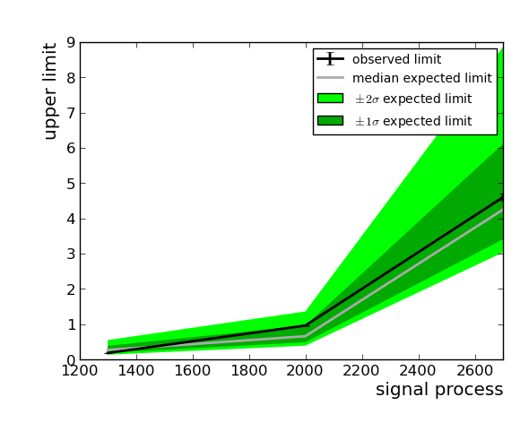
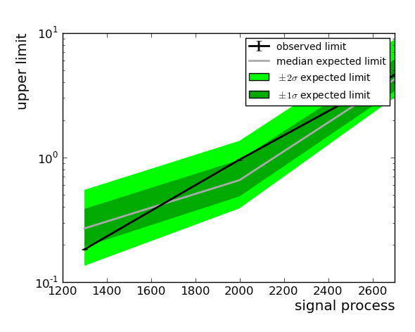

Hint: click on top-level headers to toggle visibility of that section.
| signal process | expected limit | expected limit (central 1sigma) | expected limit (central 2sigma) | observed limit |
|---|---|---|---|---|
| 1300 | 0.27 | 0.192--0.387 | 0.135--0.55 | 0.183 +- 0.0021 |
| 2000 | 0.659 | 0.487--0.957 | 0.391--1.36 | 0.962 +- 0.0109 |
| 2700 | 4.25 | 3.41--6.11 | 3.03--8.86 | 4.6 +- 0.0958 |


This page was generated at 2015-07-30 16:16:05.015753 for workdir '/uscms_data/d3/jlee2/WPrime13TeV/CMSSW_7_4_1/src/Wprime13TeV/limitsetting/theta/analysis_wprimeR_allhad_limits/res/analysis'.